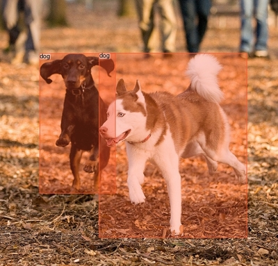

paint-annotations
Paint Annotations App.
The pyodi paint-annotations
helps you to easily visualize in a beautiful format your object detection dataset.
You can also use this function to visualize model predictions if they are in COCO predictions format.
Example usage:
pyodi paint-annotations \\
$TINY_COCO_ANIMAL/annotations/train.json \\
$TINY_COCO_ANIMAL/sample_images/ \\
$TINY_COCO_ANIMAL/painted_images/

API REFERENCE
paint_annotations(ground_truth_file, image_folder, output_folder, predictions_file=None, score_thr=0.0, color_key='category_id', show_label=True, filter_crowd=True, first_n=None, use_exif_orientation=False)
Paint ground_truth_file or predictions_file annotations on image_folder images.
Parameters:
| Name | Type | Description | Default |
|---|---|---|---|
ground_truth_file |
str
|
Path to COCO ground truth file. |
required |
image_folder |
str
|
Path to root folder where the images of |
required |
output_folder |
str
|
Path to the folder where painted images will be saved. It will be created if it does not exist. |
required |
predictions_file |
Optional[str]
|
Path to COCO predictions file. If not None, the annotations of predictions_file will be painted instead of ground_truth_file's. |
None
|
score_thr |
float
|
Detections bellow this threshold will not be painted. Default 0.0. |
0.0
|
color_key |
str
|
Choose the key in annotations on which the color will depend. Defaults to 'category_id'. |
'category_id'
|
show_label |
bool
|
Choose whether to show label and score threshold on image. Default True. |
True
|
filter_crowd |
bool
|
Filter out crowd annotations or not. Default True. |
True
|
first_n |
Optional[int]
|
Paint only first n annotations and stop after that. If None, all images will be painted. |
None
|
use_exif_orientation |
bool
|
If an image has an EXIF Orientation tag, other than 1, return a new image that is transposed accordingly. The new image will have the orientation data removed. |
False
|
Source code in pyodi/apps/paint_annotations.py
37 38 39 40 41 42 43 44 45 46 47 48 49 50 51 52 53 54 55 56 57 58 59 60 61 62 63 64 65 66 67 68 69 70 71 72 73 74 75 76 77 78 79 80 81 82 83 84 85 86 87 88 89 90 91 92 93 94 95 96 97 98 99 100 101 102 103 104 105 106 107 108 109 110 111 112 113 114 115 116 117 118 119 120 121 122 123 124 125 126 127 128 129 130 131 132 133 134 135 136 137 138 139 140 141 142 143 144 145 146 147 148 149 150 151 152 153 154 155 156 157 158 159 160 161 162 163 164 165 166 167 168 169 170 171 172 | |